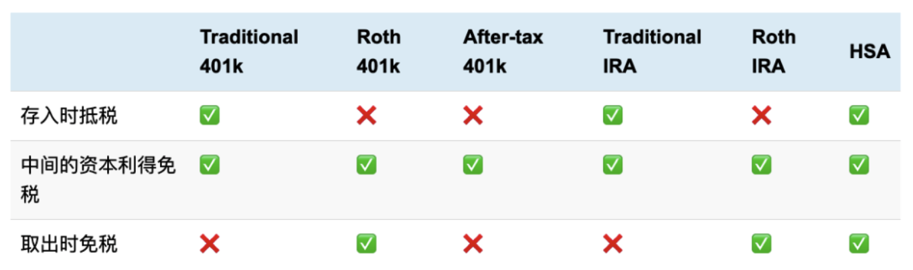
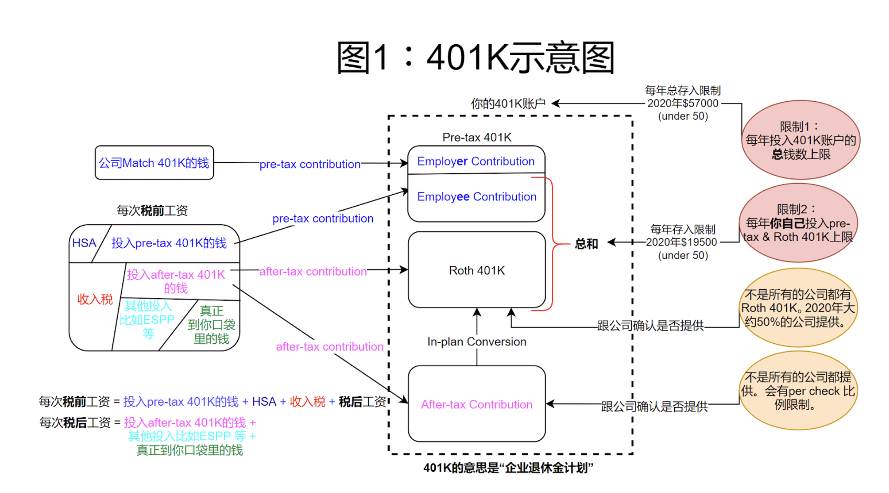
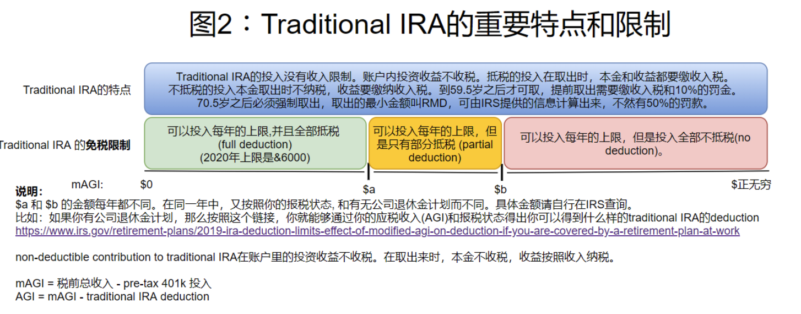
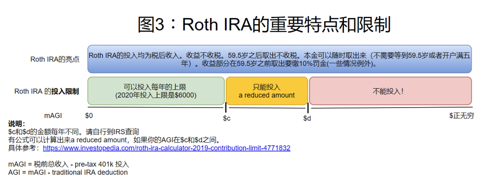

在美国生活，退休金计划必不可少。主要需要关注401K和IRA（Individual Retirement Account）。其可以细分出几个不同的退休金计划。另外，HSA（Health Saving Accout）也可以作为一个投资的账户。
税收优惠投资账户主要有以下几种，我们将分别简介一下，最后的部分会给出一个推荐的存放顺序。

企业退休金401K
401K具体内容如下图所示

我们按照图1表明的观察顺序来依次解释:
- 图1中间部分表示你的401K账户
- 401K账户由三部分组成包括pre-tax401KRoth401K和after-tax contribution
- pre-tax401K：每次投入的钱来自税前等到退休之后取出本金和收益都要缴税（收入税）
- 也叫traditional 401K
- 存钱来自税前
- 在账户内的投资收益免税
- 59.5岁前取出，取出金额需要缴纳10%的罚金，同时这些金额也要缴纳收入税。因此总的税率是10%+你的收入税率。
- 59.5岁之后取出，方可免罚金，取出金额当做收入缴税。
- 70.5岁之后，必须取出。这叫做RMD(required minumum distributiion) rule.
- Roth401K:每次投入的钱来自税后等到退休之后取出本金和收益都免税
- 存钱来自税后
- 账户内的投资收益免税
- 在59.5岁之前死亡或者残疾，可以提前取出免罚金。
- 59.5岁前取出，取出金额需要缴纳10%的罚金，同时这些金额也要缴纳收入税。因此总的税率是10%+你的收入税率。
- 59.5岁之后取出，方可免罚金，取出金额当做收入缴税。
- 70.5岁之后，必须取出。这叫做RMD(required minumum distributiion) rule.
- after-tax contribution:每次投入的钱来自税后等退休之后取出本金部分免税收益缴税(收入税)
- 存钱来自税后
- 59.5岁之后取出，方可免罚金，取出金额当做收入缴税。
- after-tax contribution是可以合法地通过megabackdoor conversion转换成Roth401K
- 图1右边部分表示401K账户的年度限制
- 401K投入的总额度每年均不同比如2020年的上限是$57000（如果你小于50岁）
- 每年对于employee-contribution pre-tax 401K与roth 401K的总和上限是不同的例如2020年是$19500
- 不是所有公司都提供Roth401K虽然大部分公司都能提供但是你还是要跟公司确认一下
- 不是所有公司都提供after tax contribution
- 图1左边部分表示如何投钱进入401K账户
- 有的公司会match员工401K公司match的钱永远都是pre-tax的也就是说即使你只存Roth 401K公司给你match的钱还是pre-tax公司match的这一部分401K就是employer contribution pre-tax401K
- 如果你选择了投入pre-tax 401K你通常会设定一个比例每次发的税前工资会按照你这个比例划一部分税前工资到你的pre-tax 401K账户中称作employee contribution pre-tax401K
- 如果你选择了投入roth 401K你也会设定一个比例你的税后工资会按照这个比例把钱存进roth 401K中
- 如果你的公司提供after-tax contribution那么你也可以用你的税后工资的某一个比例投入after-tax contribution中
401K的这三部分你可以选择投入其中的任意一个/两个/全部，或者一个都不投入。选择的依据完全是按照你个人的理财计划和对未来的预期判断，比如身份问题，是否回国，是否长寿等等。
一些投入401K的小建议：
- pre-tax至少要放满公司match的钱。比如，公司match你的投入pre tax的前5000，那你就至少要投5000。有的公司说要match你投入的全部pre-tax的50%，那你还等什么，妥妥pre-tax 401K拉满就行了。
- 如果你放满了pre-tax 401K，又想存入Roth 401K，那么请用mega backdoor conversion
- 首先你放满了pre-tax 401K，那么由于总和限制，你不能继续放Roth 401K了。
- 那么你可以继续投放after-tax contribution，然后用mega backdoor转换成Roth 401K。这么做是合法的。
- 为什么叫”mega backdoor“？因为比起“backdoor”，这个能”后门“更多的钱。“backdoor”实际上是在IRA上操作，接下来会涉及到
个人退休金计划 （IRA）
IRA的全称是individual retirement account。
投入IRA的一个最主要的限制就是你是否有earned income.
- earned income：主动收入，但不一定是全职工作，可以打短期工，兼职等。
- 如果夫妻双方，有一个上班，一个不上班。那么上班的可以为不上班的配偶投放配偶的IRA。理论上可以有两个IRA，每人一个，每个人都可以达到IRA投放的年上限。
- unearned income：包括投资收入（股息，房租收入，定期存款利息等等）
- 只有unearned income就不能够投入IRA。
IRA每年都有一个最大的上限
- 意味着traditional IRA与Roth IRA的和不能超过这个上限。
- 例如2019年最多能存$6000。你也可以有多个traditional/Roth IRA账户，但所有账户的钱必须小于等于$6000。
IRA总共分两种
-
traditional IRA
- 功能:
- 可以调整当年应税收入(AGI), 但其调整能力随着税前收入的增加而减小，直至不能调整。
- 投资是无赋税增长(grow tax free)
- 限制：
- 要等到59.5岁之后才能取出。取出的钱当作税前收入，所以要交收入税。
- 70.5岁之后必须取出。至少要取出一部分钱，这部分钱通过一个方式计算出来。至少取出来的这部分钱交RMD(required minimum distribution)。
- 如果不取出来，罚金是50%
- 可以在59.5岁之前取出来，不但要交收入税，还要交10%的罚金。
- 图解：
- 图2展示了traditional IRA的你需要知道的特点和限制
- 横坐标轴代表这你的年应税收入，根据你收入的不同，可以分为三个区间，请对照图2来了解每个区间投放IRA可以抵税的程度。
- 请阅读说明部分了解$a和$b在不同报税状态下的不同

- 功能:
-
Roth IRA
- 功能：
- 投资收益无赋税增长(grow tax free)
- 取出时完全不收税：可以不必关心退休时的收入税率。
- 取出不需要等到59.5岁, 且没有RMD
- 投入本金可以随时取出，不交税，不交罚款
- 本金存够五年之后，连本带利可以一起取出，不交税，不交罚款。
- 由于投入本金可以随时取出，所以Roth IRA可以当作紧急备用金使用。
- 限制：
- 投放Roth IRA有收入限制：收入高过一定程度就不能投入。
- 不能调整应税收入，所存部分必须全部为税后收入。
- 图解：
- 图3展示了Roth IRA你需要知道的亮点和限制
- 横坐标轴代表这你的年应税收入，根据你收入的不同，可以分为三个区间，请对照图3来了解每个区间投放IRA可以抵税的程度。
- 请阅读说明部分了解$c和$d在不同报税状态下的不同。

- 功能：
-
Rollover IRA
相当于一个traditional IRA. 如果美国民众想要另开设一个新的IRA，并自之前的IRA内取出部分金额滚存到这个新的IRA，例如自traditional IRA内的取出金额，转到新开的Roth IRA，或者因转换工作，想要将先前雇主赞助的401K退休账户的金额，滚存到新开的IRA。此时要特别注意，如果在60天内没有完成滚存的动作，国税局就会将这笔金额当成是当年的收入，粗心大意的美国民众，不仅失去滚存的机会，还要多付所得税了。 -
backdoor Roth IRA
- 并不是一种“官方的Roth IRA”类型，它是一个工具，可以把traditional IRA 或者 traditional 401K转换成Roth IRA的一种工具
- 没有存入上限，存多少钱都行。
401K与IRA的转换 (rollover)
- 图4示例了401K转换成IRA的方法，这里就涉及到了大家经常听到的两个backdoor工具
- pre-tax/traditional 401K -> traditional IRA: 直接转就完事了，没有税务影响
- pre-tax/traditional 401K -> roth IRA: 先转到traditional IRA上，然后通过backdoor roth IRA工具转移到Roth IRA。
- 注意，从traditional IRA到Roth IRA的转移会有pro-rata rules。意思就是你转移的部分算作税前收入，要缴收入税。如果你traditional IRA有好几十万刀，那么一次转移就是增加了税前收入。一个避免方式就是，你可以每年转一些，或者挑个你没有收入的年份转一些。核心的思想就是少交税。
- roth 401k -> roth IRA: 直接转就完事了，没有税务影响
- traiditional IRA convert to Roth IRA: backdoor conversion
- the deadline of vonversion is 12/31 of each year
- the IRA contribution deadline is 4/15 of next tax year
- note that “conversion” and “contribution” are different
- basically for people who want to do the conversion, they have to do it in the same year. If it’s now 2021, and you opened and funded a 2020 traditional IRA, then did a conversion, it will be counted as a 2021 traditional conversion. So you missed the 2020 contribution forever.
- ref: Roth Conversion Q&A - Fidelity.
投资建议：
- 401K match放满
- HSA放满
- traditional IRA放满然后转到Roth IRA中
- 401K max out 然后convert到Roth IRA (需要打电话问公司，有些公司只有离职时才能帮你roll over)
- after-tax401K放满然后convert到Roth IRA（如果公司支持的话）
401K的这三部分你可以选择投入其中的任意一个/两个/全部或者一个都不投入选择的依据完全是按照你个人的理财计划和对未来的预期判断比如身份问题是否回国是否长寿等等
HSA plan
HSA(Health Saving Accout)，健康储蓄账户，首先，这是一个储蓄账户。其次，这是一个医疗相关的储蓄账户。只有当你的医疗保险属于 HDHP (High Deductible Health Insurance Plan), 你才能办一个 HSA 账户。个人可以往 HSA 账户存钱，享受三重免税待遇，该账户的钱可以用于医疗相关的花费。HDHP + HSA 是美国最近几年开始非常流行的一种新的医疗保险形式。
HSA里的钱只能用于合乎要求的健康医疗支出。预先存进HSA的钱是免税的，任何时候你都可以用这些钱来支付自付额（Deductibles）、共付额（Copayments）、共同保险（Coinsurance）等医保不覆盖的费用，但通常不能用于支付保费（Premiums）。
需要一直是High Deductible的医疗保险，高自付的医疗保险每个月的保费低，但是自付额高，这适合年轻人。因为年轻人身体比较健康，看病少。如果你是年龄大，需要常常看医生，各种慢性病，那么还是那种保费高的其他类型保险比较合适。
HSA存的钱也不用交税，而且一般公司也会contribute一部分钱到HSA作为福利，公司contribute的钱从几百到上千不等。存在HSA里面的钱还可以买各种投资产品，所以这里面的钱也不会过期！投资增长后的earning在用的时候也不用交税只要用的地方都是付各种医疗费用就可以。65岁之后开始从HSA账户中提取任何金钱(不一定用于医疗）而不会受到处罚。
参考文献：